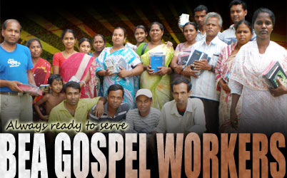

The Bengali Evangelical Association (BEA) was founded in 1986 as a Christian Missionary organization. Its goal is to serve the poor and destitute and bring them the gospel of Jesus Christ.

Jesus said "Come to me, all you who are weary and burdened, and I will give you rest."
As a servant of Christ we must continue His command before the door is closed. "As long as it is day, we must do the work of him who sent me. Night is coming, when no one can work." John 9:4